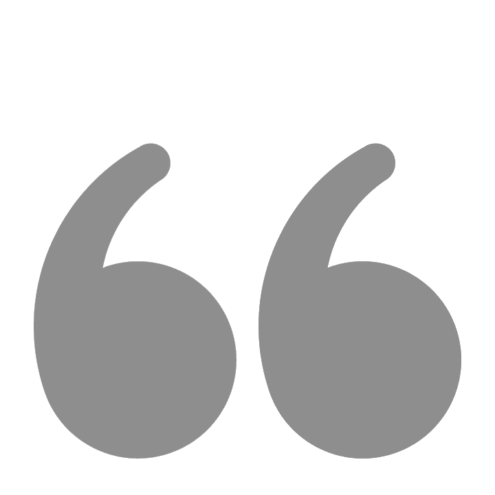

こんにちは！僕の名前は

2009 - 2015
2009 年の 6 月にミャンマーのNo(2) Basic Education High School Dawei 高等学校に入学しました。2014 年の 6 月にAT Private School Dawei高等学校に入学して 2015 年の 3 月に高校を卒業しました。
2016 - 2020
2016 年の 7 月にミャンマーの Dawei Universityで、Philosophy(哲学) を学び始めて、2020 年の 03 月に大学卒業しました。
2022 - 2024
日本で自分のITキャリアの夢を実現するために2022 年の 04 月に神戸KR学院日本語学校に入学することにしました。学校で日本語と日本文化を学び、2024 年の 3 月に卒業しました。
2024 - 2026
2024年4月に東京みらいAI＆IT専門学校に入学し、AIプログラミング＆CGクリエイター科で学びました。 在学中は、友人とグループプロジェクトに取り組み、実践的な開発経験を積みました。 2026年3月に卒業し、現在は人々に価値を提供できるAIエンジニアとして成長することを目指しています。 技術を通じて課題を解決し、ユーザーにとって有益なシステムを開発していきたいと考えています。
About
Web links
Navigate
Contact
E-mail - kyawzinhein.jp.edu@gmail.com
Telephone - 080-9564-4706
Address - Aralkawa City ,
1-33-2shanboruminowa, Arakawa-ku,
Tokyo 120-0002